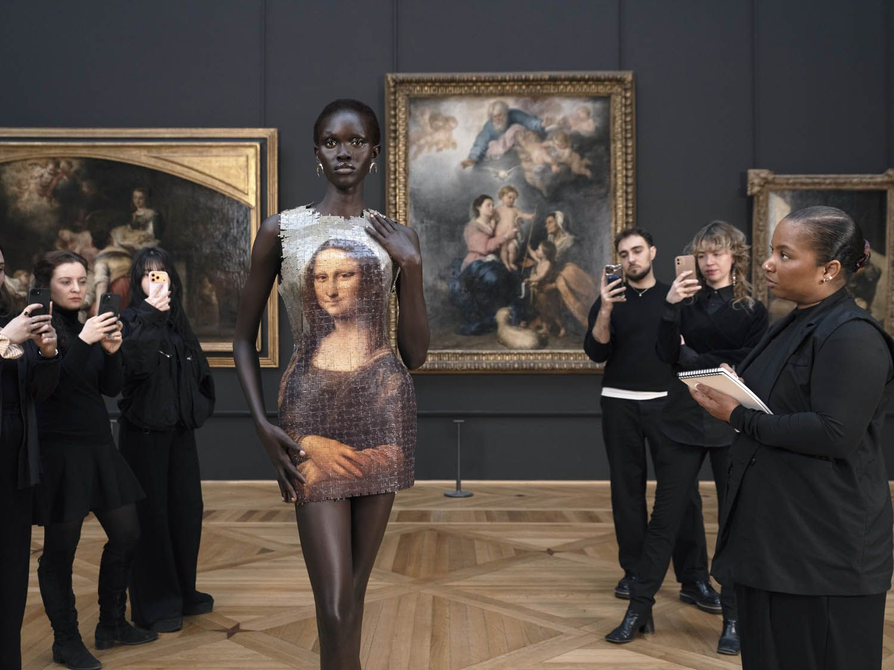
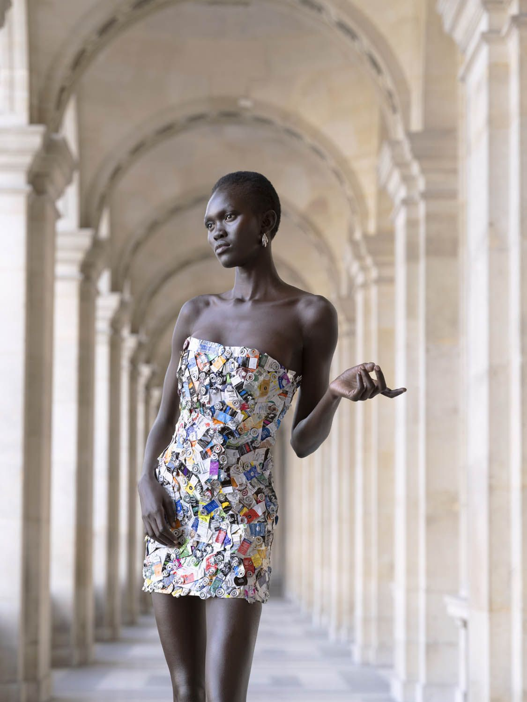
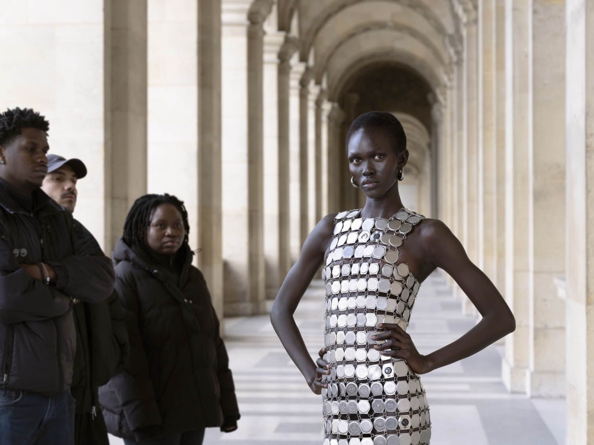
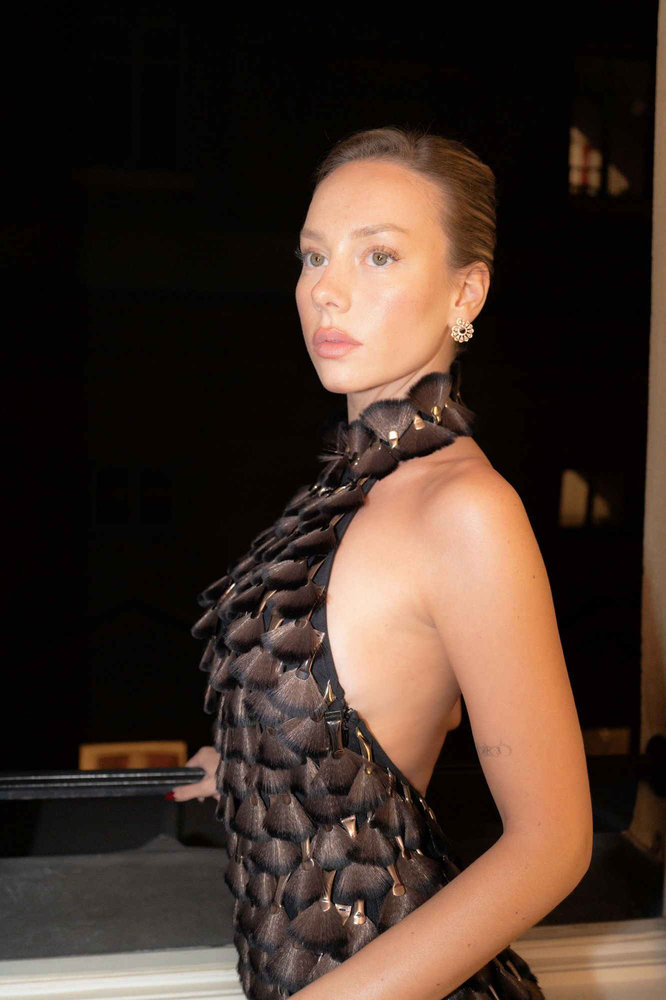
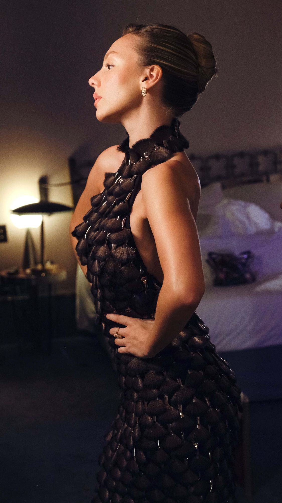
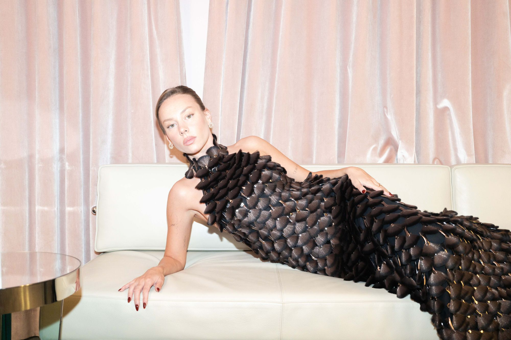
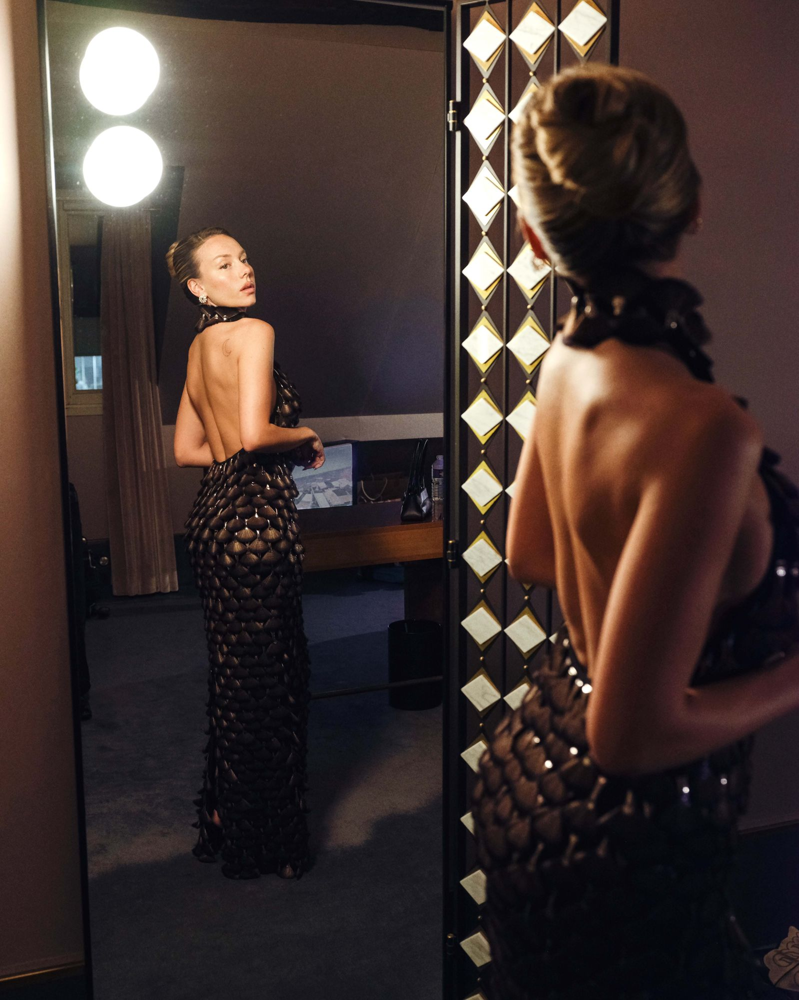

Collaborations
Marine Serre × Louvre
An unprecedented collaboration with the Louvre: the first time in the museum's history that a fashion house has been granted creative carte blanche on the Mona Lisa itself.
- Campaign
- Alice Mann
- Documentary
- Loïc Prigent
- Co-production
- Artsphere
- Brand
- Marine Serre

The project
Five-piece couture collection created in direct dialogue with the Mona Lisa, and a capsule commercial collection extending the collaboration into retail, accompanied by a window installation and mini boutique takeover.
8-image campaign shot by Alice Mann in collaboration with Artsphere, and a documentary directed by Loïc Prigent. Press breakfast at Café Marly followed by a private tour of the Louvre for press and guests.
My role
Led all negotiations with the institution from first contact through to delivery. With no formal budget on either side, structured the entire production around in-kind partnerships in place of a marketing spend, securing free use of the Louvre for the shoot.
A co-production with Artsphere to offset shoot costs, and a three-way deal bringing on acclaimed fashion documentarian Loïc Prigent.
The result
100+ placements across 11 international markets, €180K tracked media value and 180 million total socials reach.
Credits
- PhotographyAlice Mann
- ModelAluel Makuach
- GroomingElisa Paulmin
- LightingVincenzo Sassu
- DigitechTheo Hagege
- ProductionArt Sphere
- DocumentaryLoïc Prigent
- Grand Dîner photographySarah Piantadosi
100+
Placements
11
International markets
€180K
Tracked media value
180M
Total socials reach
The collection




The Grand Dîner du Louvre
The embroidered mesh dress with brushes was built from 850 Make Up For Ever brushes, taken from their dead stock, after the Make Up For Ever partnership was extended from show sponsorship into couture, including the selection and shipping of every brush sample.
Ester Expósito wore it to the Grand Dîner du Louvre.



